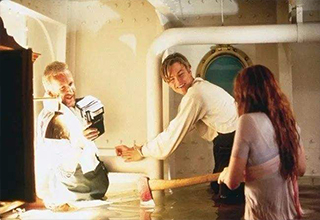

幕后花絮

该片制片方想让马修·麦康纳演男主角，但是导演詹姆斯·卡梅隆坚持启用莱昂纳多·迪卡普里奥。
詹姆斯·卡梅隆之所以拍摄《泰坦尼克号》这部电影实际上是因为能去探寻残骸。整个探险队为了拍摄到满意的画面12次潜入深海。
影片开头具有特殊意义的开场戏是导演在剪辑工作的后期冥思苦想20个小时以后的成果，而在开头泰坦尼克号在海底的残骸镜头有一部分是真实的，而有一部分则是利用模型来拍摄的，区分的办法是当镜头中有两艘潜艇时是模型，只有一艘潜艇时则是真正的泰坦尼克号的残骸。
杰克第一次在影片中出现时的抽烟镜头遭到了非议，认为会误导小孩子们。
凯特·温斯莱特一次次不厌其烦地向导演寄上自荐书，信中还夹有玫瑰花，附上我就是你要找的露丝，最终获得了这部世纪之作中露丝这一角色。
影片中救生艇搜寻生还者的镜头是在装满超过350,000加仑水的大水槽内拍摄的。
因为全尺寸的泰坦尼克号模型只有右半边是全部完工的，所以导演特地想出了用相反文字的道具来拍摄，再将影片左右颠倒放映，所以船上如果有需要文字的道具，都需要做正反两套。
《泰坦尼克号》是当时成本最为昂贵的影片，电影拍摄制作过程长达五年。
杰克站在泰坦尼克号的船头高呼随后镜头缓缓后拉俯瞰整个泰坦尼克号，这短短的10余秒运用了先进的电脑制作技术，花了100万美元才得以完成。
影片中杰克和露丝比赛吐口水的场景遭到了从监制到演员，从电影公司老板到剧组成员几乎所有人的反对，但导演认为自己的电影不能循规蹈矩而要有所创新，实际上这一段也成为影片中让观众记忆犹新的场景之一。
珍藏版DVD的花絮中可以看到导演詹姆斯·卡梅隆亲身站在冰冷的水中手执摄象机的珍贵镜头。